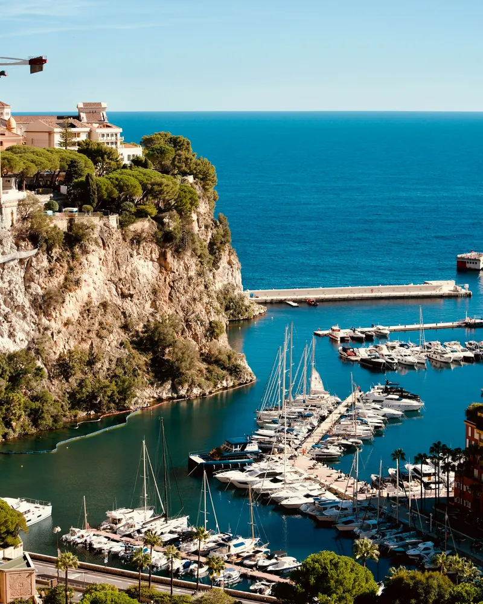

Dépannage et maintenance informatique à Monaco
De Monte-Carlo à Fontvieille, Novazur IT intervient chez les résidents, dans les résidences secondaires et dans les bureaux des entreprises monégasques : dépannage, Wi-Fi, sécurité, maintenance et téléphonie, avec discrétion et réactivité, en français ou en anglais.
- ≈ 30 mindepuis notre base de Nice
- 5 minpour une prise en main à distance
- 6j/7support joignable
- FR · ENintervention en français ou en anglais
Pour les résidents de Monaco
Appartements de Monte-Carlo, villas du quartier Saint-Roman, résidences avec vue sur le port : nous intervenons chez vous sur rendez-vous, avec la discrétion que vous attendez.
- Dépannage PC et Mac, ordinateur lent, virus et arnaques
- Wi-Fi performant dans les grands appartements et les étages élevés
- Box Monaco Telecom, TV, enceintes et objets connectés
- Préparation et suivi des résidences secondaires
- Accompagnement personnalisé, à votre rythme

Pour les entreprises monégasques
Cabinets, agences, sociétés de services, commerces et établissements hôteliers : nous devenons le service informatique de votre structure monégasque.
- Maintenance du parc et helpdesk pour vos équipes
- Microsoft 365, messagerie et partage de fichiers
- Sauvegardes externalisées et plan de reprise
- Cybersécurité : antivirus managé, pare-feu, double authentification
- Installation et programmation de téléphonie VoIP
IT support in Monaco, in English
Novazur IT is an IT support company based in Nice, serving residents, second-home owners and businesses across Monaco. Your technician speaks English, from the first call to the on-site visit.
Remote support is usually available the same day, and on-site visits anywhere in the Principality, from Monte-Carlo to Fontvieille, are arranged quickly.
Call us: +33 4 22 13 26 73 More in EnglishWhat we can help with
- Computer repair at home or in your office (PC and Mac)
- Wi-Fi and network setup, Monaco Telecom box installation
- Virus removal and protection against online scams
- IT maintenance and helpdesk for businesses
- Microsoft 365, backups, cybersecurity and VoIP phone systems
- Second-home IT care while you are away
Nos services informatiques à Monaco
Particuliers comme professionnels, tout ce qu'il faut pour que votre informatique fonctionne, au quotidien.
Dépannage à domicile à Monaco
PC ou Mac lent, panne, mise à jour bloquée : diagnostic et réparation chez vous ou à distance.
Wi-Fi et box internet à Monaco
Couverture Wi-Fi dans tout l'appartement, box et TV installées, objets connectés réglés.
Virus et arnaques à Monaco
Faux support, compte piraté, pop-ups : nous nettoyons et sécurisons vos appareils.
Maintenance informatique d'entreprise à Monaco
Supervision, mises à jour et helpdesk : votre parc suivi au quotidien.
Cybersécurité des sociétés monégasques
Antivirus managé, pare-feu, double authentification et sensibilisation des équipes.
Microsoft 365 et messagerie à Monaco
Adresses à votre nom de domaine, Teams, OneDrive : mise en place et gestion.
Téléphonie VoIP à Monaco
Standard téléphonique IP, accueil vocal, softphones et portabilité des numéros.
Sauvegarde des données à Monaco
Sauvegardes automatiques, externalisées et testées, pour repartir vite après un incident.
Tous les quartiers de Monaco
Dans toute la Principauté, ainsi que dans les communes françaises limitrophes.
- Monte-Carlo
- La Condamine
- Fontvieille
- Monaco-Ville (le Rocher)
- Larvotto
- Saint-Roman
- Moneghetti
- Jardin Exotique
- Saint-Michel
- Beausoleil
- Cap-d'Ail
- Roquebrune-Cap-Martin
- La Turbie
- Èze
- Menton
Comment se passe une intervention à Monaco
Simple, rapide, et sans surprise.
Vous nous appelez
Nous qualifions votre besoin et faisons un premier diagnostic gratuit par téléphone.
Nous intervenons à distance
Si le problème est logiciel, une prise en main sécurisée suffit souvent, le jour même.
Ou nous venons sur place
Rendez-vous chez vous ou dans vos bureaux, à l'heure convenue, partout dans la Principauté.
Vous êtes tranquille
Nous vérifions tout avec vous et restons joignables. Les entreprises reçoivent un compte rendu d'intervention.
Votre appartement monégasque, prêt à chacun de vos séjours
De nombreux propriétaires ne résident à Monaco qu'une partie de l'année. Entre deux séjours, une box qui se met à jour, un Wi-Fi qui se dérègle ou une télévision qui ne trouve plus ses chaînes suffisent à gâcher une arrivée.
Nous prenons le relais : vérification de l'installation avant votre venue, assistance à distance pendant votre séjour, et passage sur place si nécessaire, en lien avec votre gardien, votre conciergerie ou votre agence. Vous retrouvez un appartement où tout fonctionne, dès la première minute.
- Vérification de la box, du Wi-Fi, de la TV et des caméras avant votre arrivée
- Assistance à distance, où que vous soyez dans le monde
- Mises à jour et sauvegarde de vos appareils
- Intervention sur place coordonnée avec votre conciergerie
Un informaticien de proximité pour la Principauté
Faire appel à un prestataire installé à l'autre bout de la France, c'est attendre un technicien qui ne connaît ni votre installation ni les contraintes locales. Basés à Nice, nous rejoignons Monaco rapidement et connaissons bien les spécificités de la Principauté : immeubles de grande hauteur, accès et stationnement réglementés, copropriétés exigeantes, clientèle internationale.
Nous accompagnons aussi les entreprises installées des deux côtés de la frontière, avec des bureaux à Monaco et en France : un seul interlocuteur suit l'ensemble de vos sites, de vos postes et de vos comptes.
Particuliers ou professionnels, vous bénéficiez de la même exigence : un diagnostic clair, des explications sans jargon et un suivi dans la durée.
Informatique à Monaco : vos questions
Intervenez-vous vraiment à Monaco ?
Oui. Basés à Nice, nous rejoignons la Principauté en une trentaine de minutes hors heures de pointe, et nous y intervenons régulièrement, à domicile comme en entreprise. La télé-assistance, elle, est disponible immédiatement.
En combien de temps pouvez-vous intervenir ?
Une prise en main à distance est généralement possible le jour même. Pour un déplacement, nous proposons un rendez-vous rapide, et les entreprises sous contrat bénéficient d'un délai d'intervention garanti.
Installez-vous les box Monaco Telecom ?
Oui. Nous configurons votre box et votre Wi-Fi quel que soit votre fournisseur, Monaco Telecom compris, et nous connectons ensuite vos ordinateurs, téléviseurs, imprimantes et objets connectés.
Pouvez-vous gérer notre appartement pendant notre absence ?
Oui. Nous préparons l'installation avant votre arrivée (box, Wi-Fi, TV, caméras), surveillons à distance ce qui peut l'être et intervenons sur place si besoin, en lien avec votre gardien ou votre conciergerie.
Travaillez-vous avec les sociétés monégasques ?
Oui : cabinets, agences immobilières, sociétés de services, commerces, hôtellerie et restauration. Nous assurons la maintenance du parc, le helpdesk des équipes, Microsoft 365, les sauvegardes, la cybersécurité et la téléphonie.
Parlez-vous anglais ?
Oui, nous intervenons en français ou en anglais, à domicile comme en entreprise. Yes, we provide IT support in English for residents, second-home owners and businesses in Monaco.
La confidentialité de nos données est-elle respectée ?
Absolument. Nous n'accédons qu'aux éléments nécessaires à l'intervention, toujours avec votre accord, et ne conservons aucune copie de vos données. Pour les entreprises, nous pouvons formaliser cet engagement par écrit.
Intervenez-vous le samedi à Monaco ?
Oui, nous sommes joignables du lundi au vendredi de 8h30 à 19h et le samedi de 9h à 13h. Les entreprises sous contrat peuvent bénéficier de créneaux adaptés à leur activité.
Suivez-vous les sociétés qui ont des bureaux à Monaco et en France ?
Oui. Nous gérons les parcs informatiques répartis sur plusieurs sites, de part et d'autre de la frontière, avec un interlocuteur unique et une supervision commune.
Nous intervenons aussi près de chez vous

Un besoin informatique à Monaco ?
Appelez-nous : premier diagnostic gratuit par téléphone, intervention rapide dans toute la Principauté.